Going into week 7 at the Telstra Creator Space, I am excited to play with the Arduinos more. I have been hunting and gathering examples of physical (in particular, wearable) compuational art, and I am ready to begin sketching, ideating and going down research rabbit holes for my final project. I have also been trying to keep up with adding content to my workbook, with its current, imperfect styling. This has been challenging, but is managable if I edit/add a little each day. I think in the coming weeks I will need to dedicate some real, quality time to refining and extending the styling and interactivity of my workbook before the next submission. My reflection on the workbook A submission, which was released last week, can be found below.
The feedback to my workbook submission was very helpful in
providing a couple of really clear changes that I could
implement to improve my workbook for submission 2. I agree
with the fact that the p5.js sketch 'web' is working well,
and that my current system for storytelling/narrative voice
is also working effectively. Yay!
I also can see how
the continuous scroll could perhaps be better broken up or sign
posted to improve the experience, and that this could also be a
really interesting area to implement interactivity. I think I
should go back and implement the idea that I had for a fly
being wrapped up in spider web as the user reads through a
page, or maybe I could go back to the cartesian plane idea
that I had and combine it with the suggestion to "visit
different areas of any particular week's web" to kind of
gameify the user experience.
I also really agree
that my current site is missing some "margot-mischief"! I
think I got a bit caught up in trying to make my site nice
and clearly structured, using proper heading tags etc. and
all of the fun got a bit lost. This was me overcorrecting,
after my html and css structure for my personal portfolio
in #cyberstar came out a little all over the place. I think
I definitely have an oppotunity with the next submission to
go back and find the happy medium, building on the strong
foundation that I created in workbook A and making it a
little more "me" for workbook B.
In our week 7 class, we played with actually building up some little circuits using the Arduinos, and then coding them on the Arduino IDE and uploading this code to the Arduino. I worked with Oscar and we started by using a photoresistor and passive buzzer to create our own theremin! The idea was to get the buzzer to sound if light was present and remain quiet if it was left in the dark. Getting the wiring right and figuring out the code was straight forward enough since we were able to use the digrams and code on tinkercad as a guide. Once we got it to work, we played with changing certain values in the code to control the amount of light needed in order for the buzzer to sound. This sounded much worse than a real theremin and so the next hing we tried was replacing the passive buzzer with a speaker, which made the sound more pleasant.
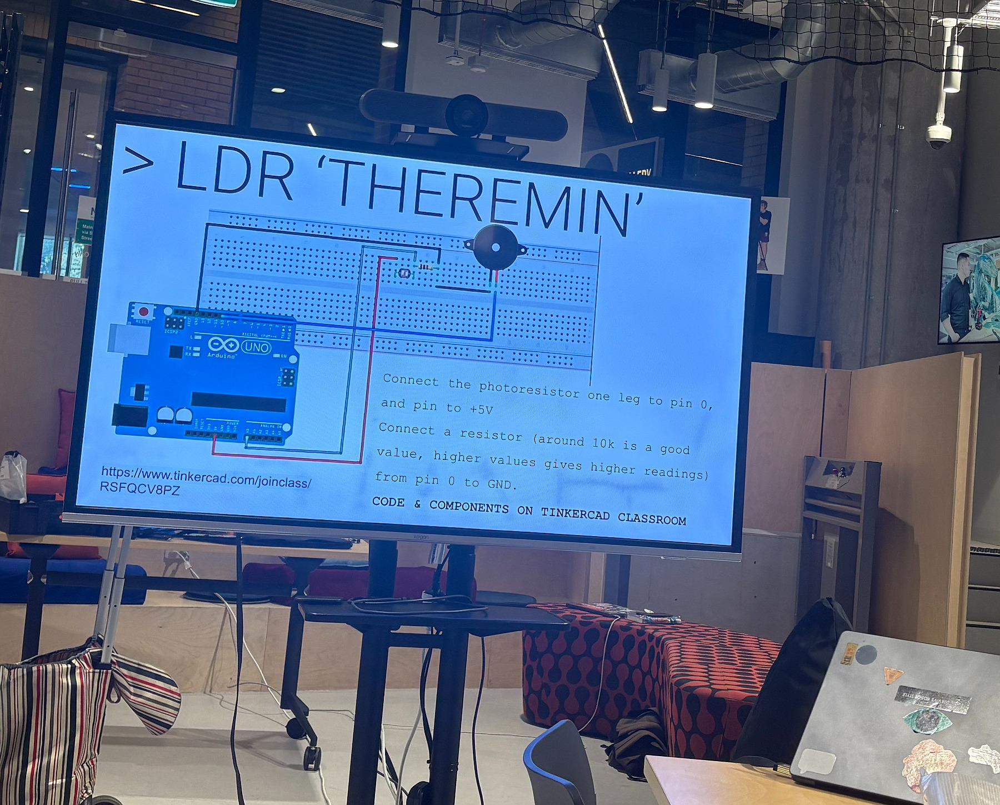
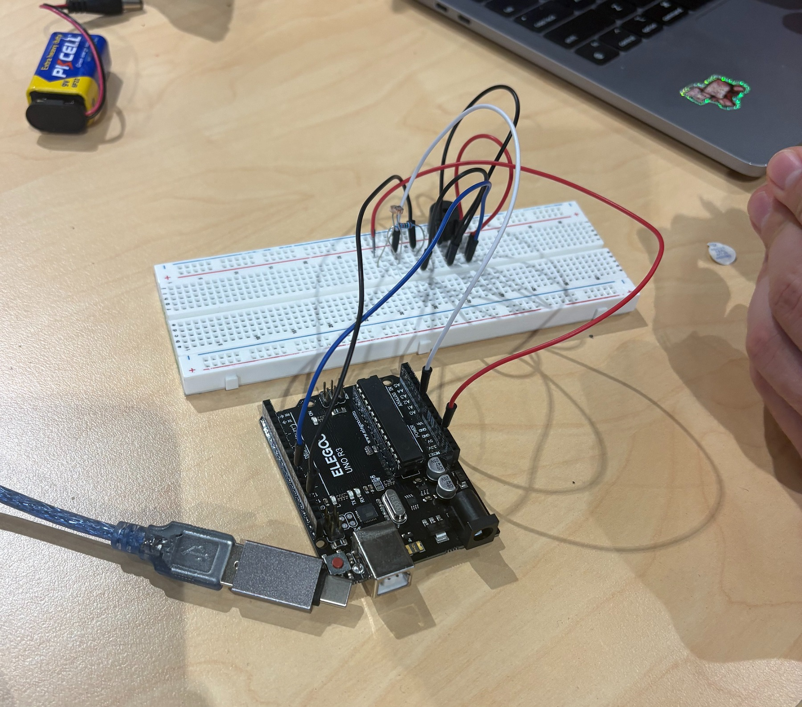
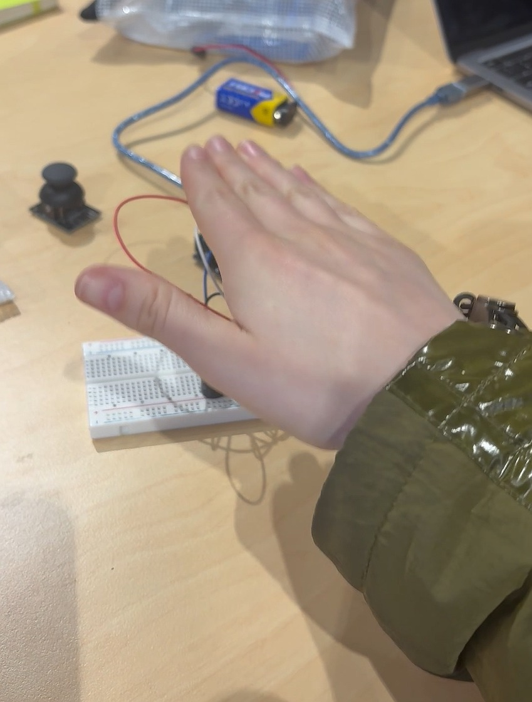
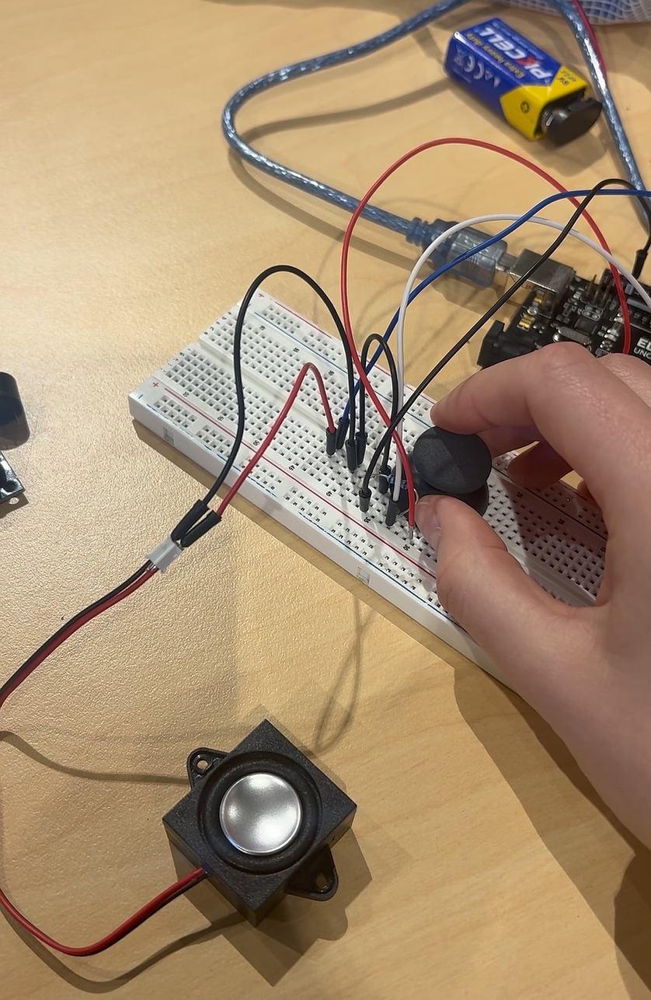
The next activity that we did in class was to use an
ultrasonic sensor and speaker (or buzzer) to make a kind
of distance sensor. We first built this, again using the
diagram and code provided on tinkercad, on the large bread
board and the computer as a power source. We needed to
change to the battery to get this to work, and once it did
we were given the challenge of attaching out sensor to a
paper bag. This would allow us to wear the sensor on our
heads and walk around without (hopefully) bashing into
anything.
For this task we transferred out work onto
the smaller bread board. This small part of the excersise,
in particular, was really really helpful to me in terms of
illustrating exactly how the positive and negative charges
work, and how to actually use them. Once we had gotten our
sensor to work, we taped it and the battery onto the paper
bag - which Oscar had drawn a lovely face onto - and each
took a turn walking around the creator space and not running
into anything! We were rewarded for our work handsomely, with
peanut butter cups. Very very fun and empowering to be able
to build something like this with my own hands. I think this
form of creation feels really good to me because of my
background in textiles, sewing and knitting etc. You get
such instant, physical feedback and I love that. I am
enjoying this process a lot, but at this point still unsure
about where it will fit into my final project.
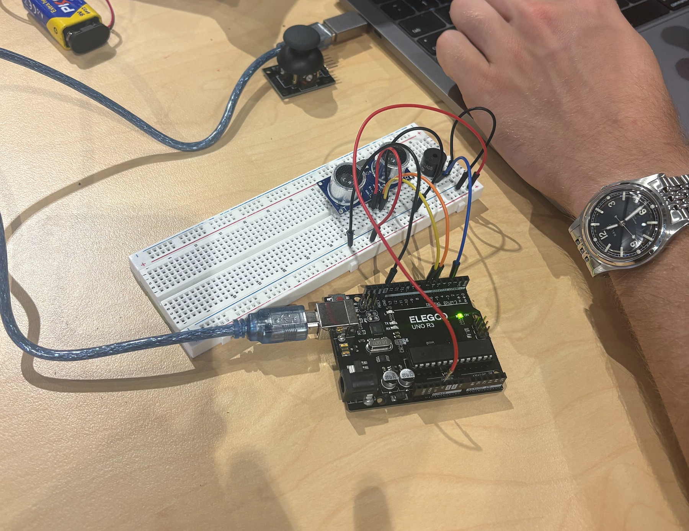
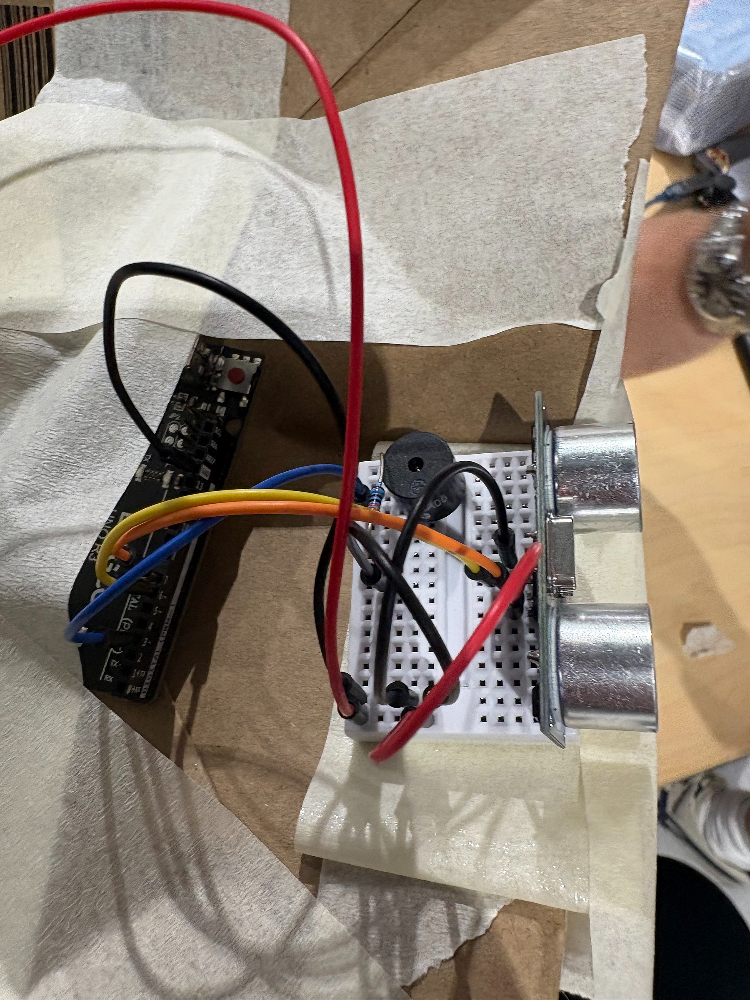
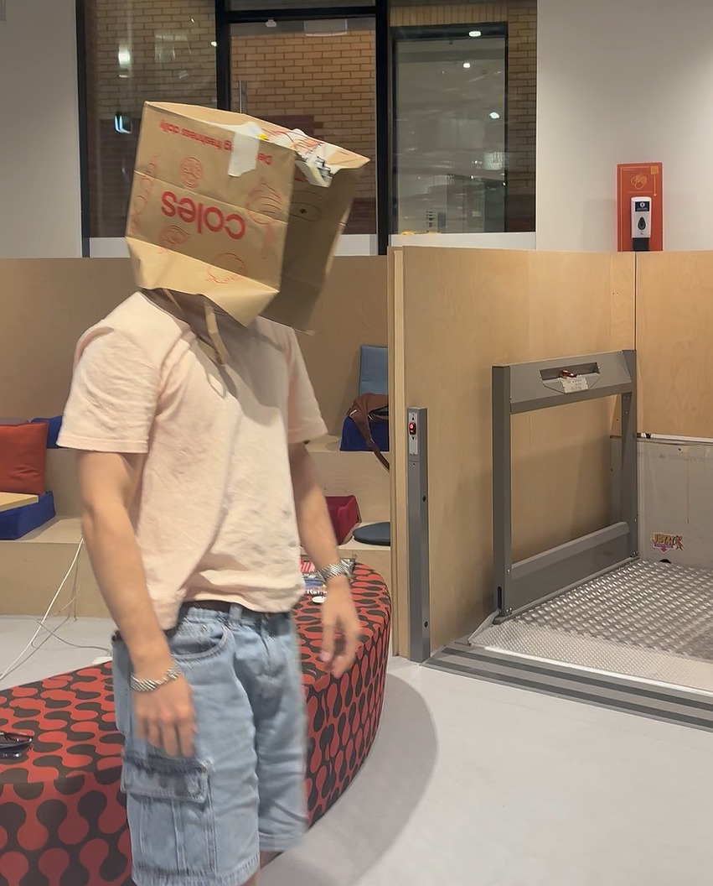
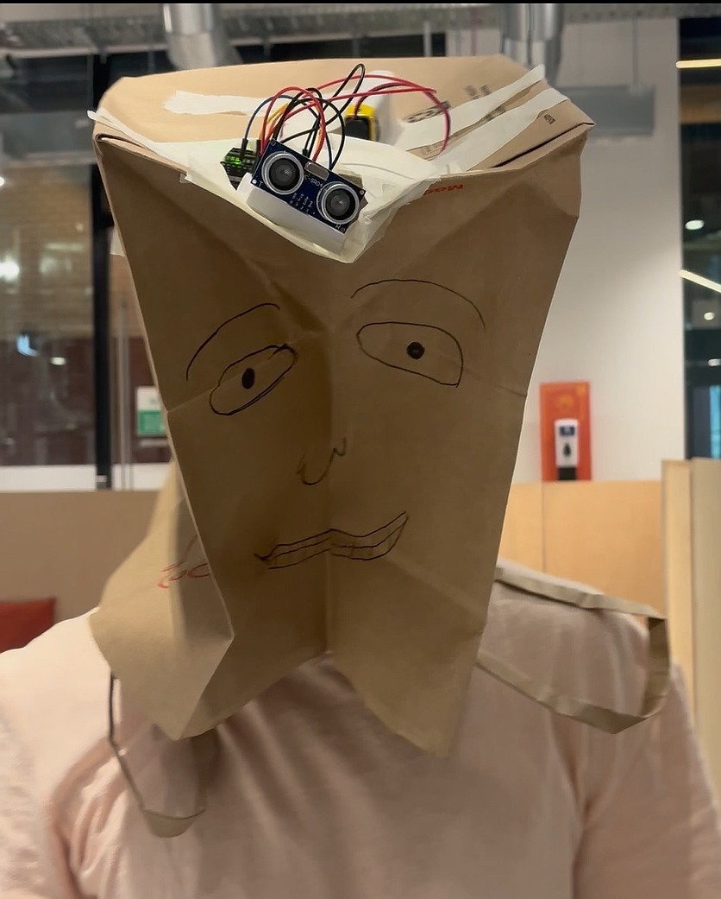
I got so excited when we built our own tiny theremins because it reminded me of some of my favourite moments in Severance, and it got me thinking about all of the interactivity design in the TV show as a whole. The main premise of Severance is the concept of splitting your consciousness into a work personality and home personality. In this way, crossing the physical threshold of one's arrival at work is effectively a time machine to the end of your work day when you leave. Likewise, for the work personalities, their experience of life is of a never ending work day - no sleep, no sunlight, no love or family. This technological intervention is so so incredibly physical and visceral, and it only becomes more visceral for the viewer as the show goes on.
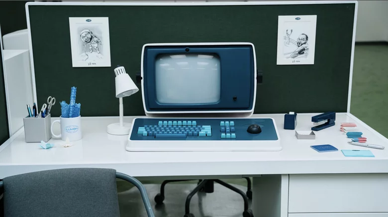
When we touched on Neil Harbisson in class, I was intrigued, but not fully aware of how reading more about this transhuman cyborg would actually affect me. Harbisson is an artist who was born colour blind, and has had an antenna implanted into the back of his head, which translates colour into vibrations which he then experiences as sound. To find out more about Harbisson, I read an interview with him and, surprisingly, I found it quite confronting. He was very frank about the fact that he has permanently altered the way that he experiences the world around him, and even expressed plans to go further and alter his perception of time through additional bodily augmentations. I have no real moral objections to his practice, and do truly believe that it is his righ to do what he likes with his own body. But I think when I read about this kind of drastic intervention, I turn the possibility of that back onto my own life, and I make myself feel a bit sick! I don't know exactly what to make of all of this, and of my reaction to this artist, but I do think that it is interesting to note that I have had a reaction.
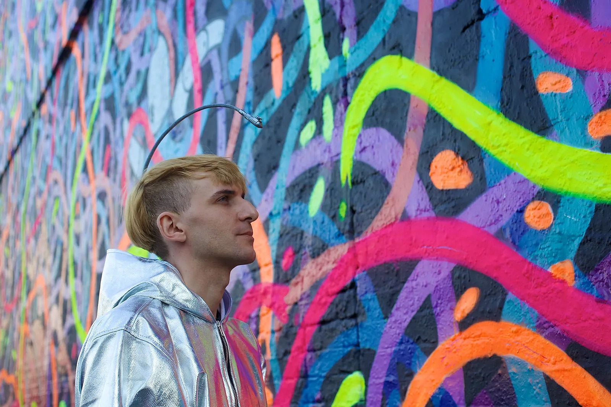
Anouk Wipprecht is a Danish fashion and technology designer,
whose bold style combines technology, art and fashion to create
futuristic, augmentations of the human body. One of her most
famous pieces, the spine dress, is an example of this. Embedded
with sensors and motorised arms, the dress itself physically
enforces the wearers personal space. Her 2017 collaboration
with bionic pop artist Viktoria Modesta, used "sensors and
actuators in a sonic bustier, and an integrated accelerometer
in a prosthetic leg, [to] transform Modesta into a living
musical instrument." (Eric Goldemberg, 2017).
I wasn't
able to watch the full performance, but I think this integration
of the body into the act of music making is really fascinating,
as it makes the act of producing music more explicitly linked
to movement and performance. I think a lot of people consider
playing an instrument something that is separate from an act
like dancing or the performance of the body. But when you watch
incredible classical musicians play in concert settings, so
often, the movement of the face and body is as much a part of
the performance as say, their fingers on the keys of a piano.
Chinese American pianist Yuja Wang is one of the most incredible
examples of this for me - I could literally watch her play for
hours, even though I don't really love classical piano music.
The way that she moves her body, her facial expressions and
even her clothing and shoe choices, all heighten her talent
as a musician for me.
I don't know that is is what I
was meant to get from this piece of work by Wipprecht and
Modesta, but I did feel that the performance of
Sonifica, felt like a future version of a concert
piantist's performance. Of course, other elements of the work,
such as the fact that Modesta has a bionic leg and as such is
already expanding the realm of physical possibility through
technology, also make this piece feel like an exciting
provocation of the way we consider the body and its limitations.
But for me, the beauty of the actual movement of the performance
felt the most exciting.
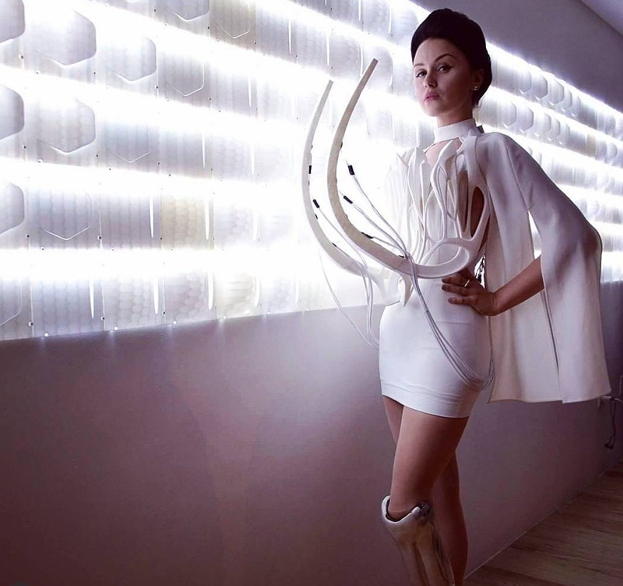